Watch the Mass Center: Its Path Alone vs. Rotation Too
One Machine, All Three Motions
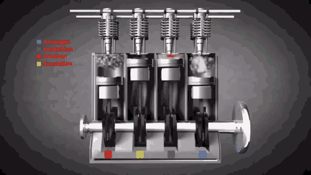
Three Problem Types: What Do You Know About B?
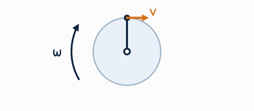
Three Problem Types: What Do You Know About B?
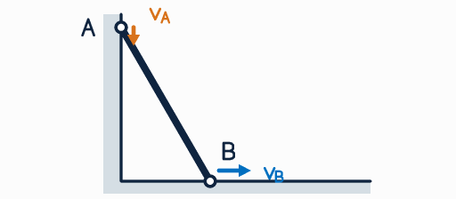
Three Problem Types: What Do You Know About B?
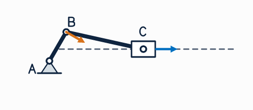
Solution — Problem 7
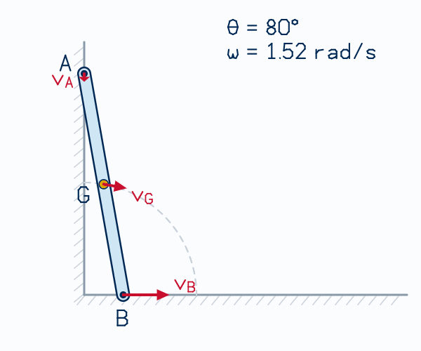
Exercise — Problem 8: Linkage With a Slider
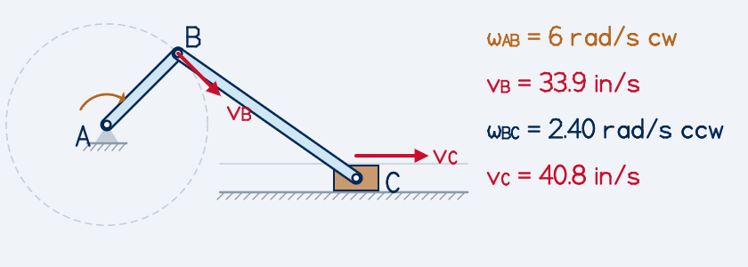
The Instantaneous Center (IC)
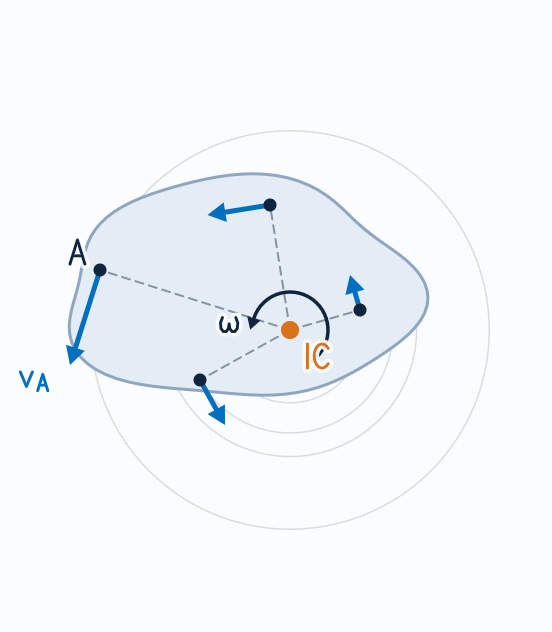
Locating the IC
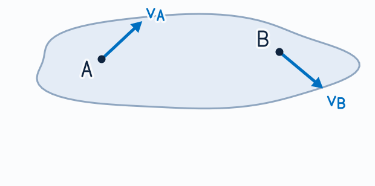
Locating the IC: parallel velocities
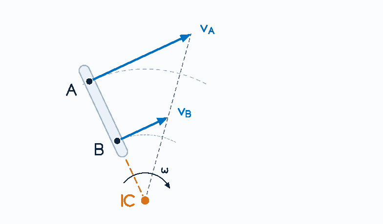
Locating the IC: parallel velocities
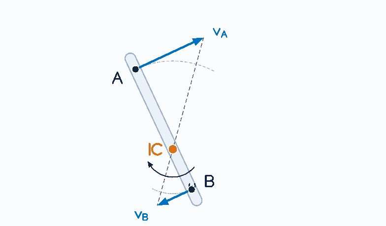
Rolling Without Slipping
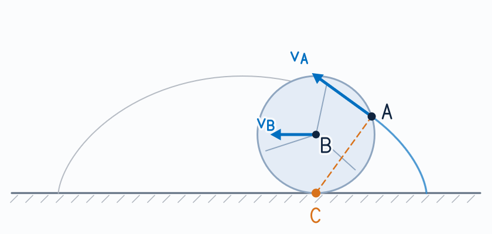
Rolling Wheels and the IC
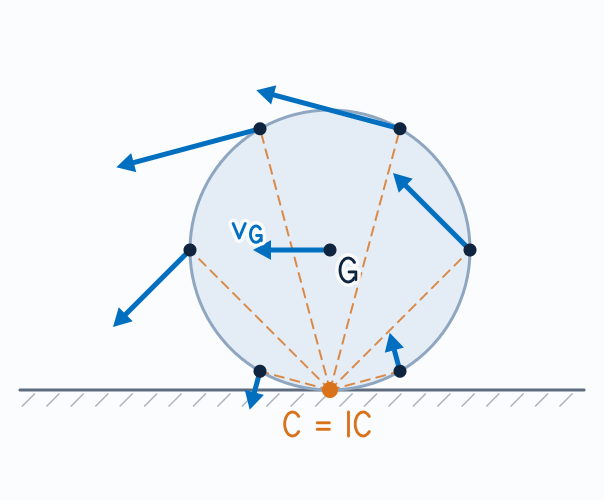
Same Three Problem Types: Where Is the IC?
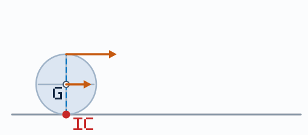
Same Three Problem Types: Where Is the IC?
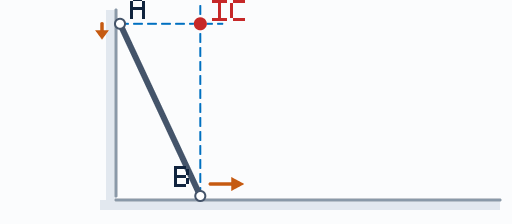
Same Three Problem Types: Where Is the IC?
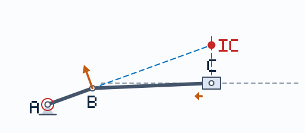
Example — Problem 10: Collar on a Two-Bar Linkage
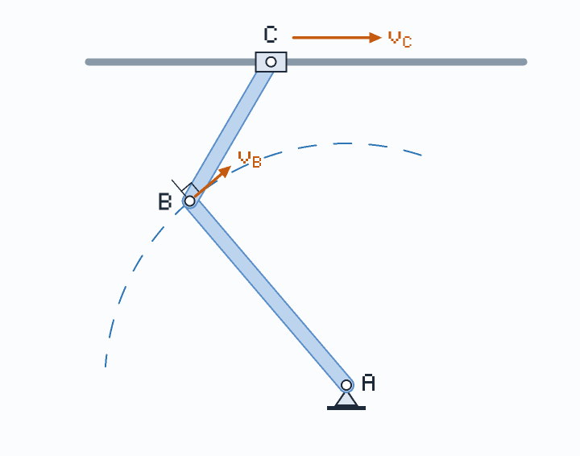
Exercise — Problem 11: Hydraulic Collar
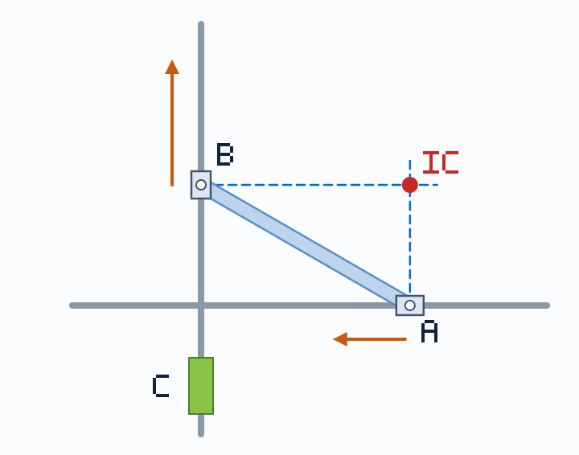
Exercise — Problem 12: Rods on Rolling Disks
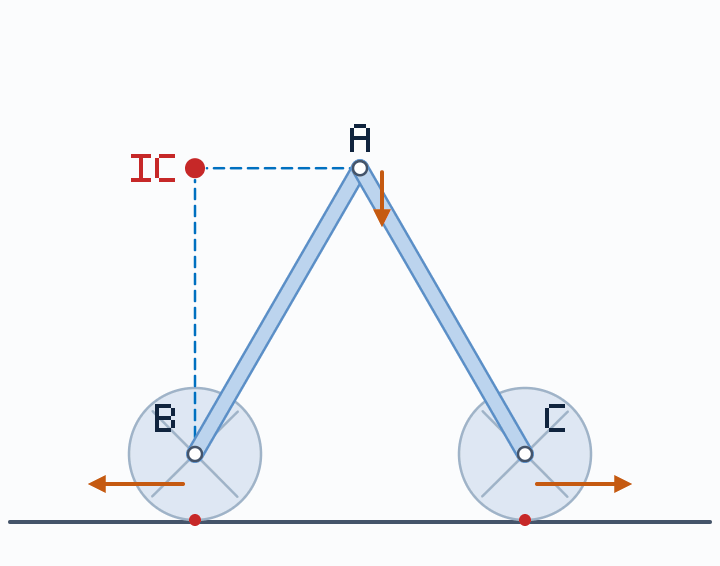
Same Three Problem Types, Now for Acceleration

Same Three Problem Types, Now for Acceleration

Same Three Problem Types, Now for Acceleration

Glued or Sliding? Ask This First
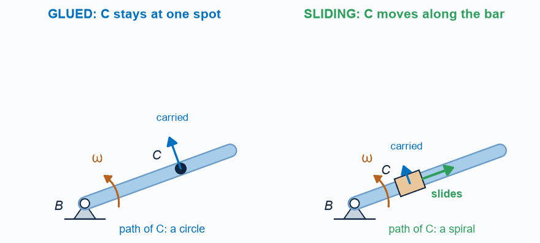
Problem 17: The Linkage in Motion
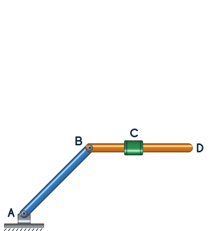